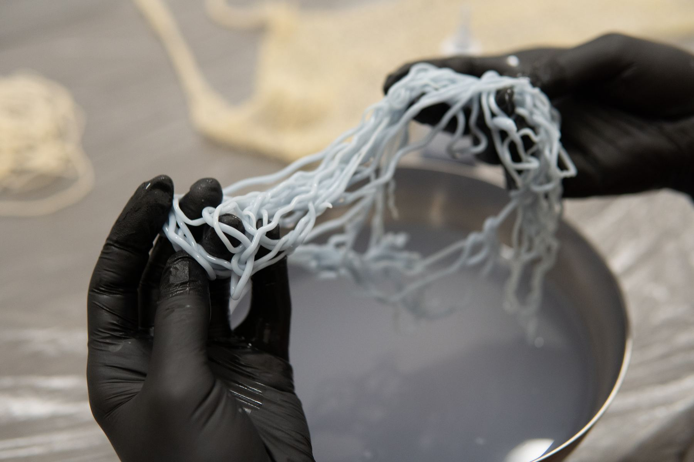

Independent Design & Research Practice · Venice
Emi BioLab
Exploring matter through experimentation, developing knowledge and new design possibilities.


Carola Emanuela GodjaDesigner & Researcher · Founder · MA Iuav · TEDxVenezia speaker
About →
Selected explorationALG-014 · Continuous filamentView →
Selected affiliationsTEDxVenezia · Iuav · Ocean Space / TBA21 · Bevilacqua La Masa · UIUC